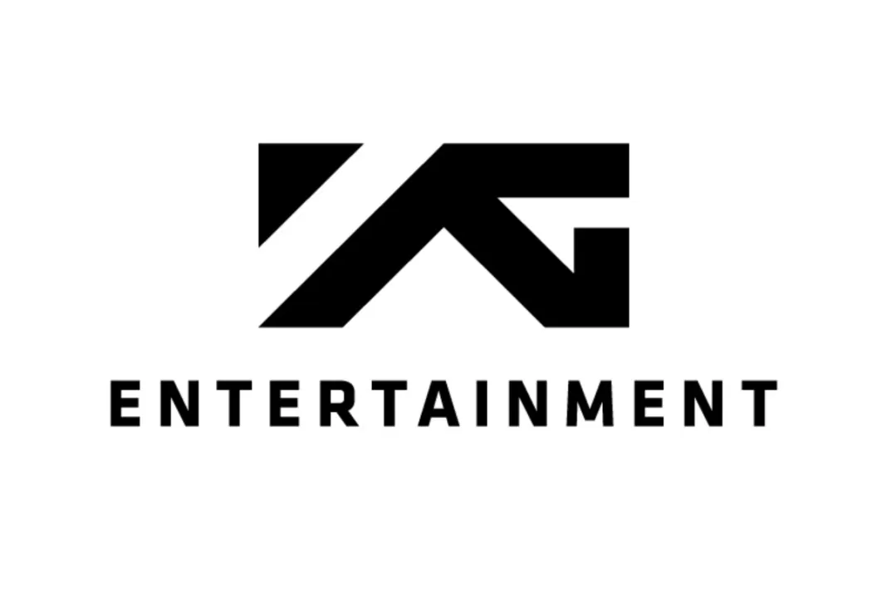

BLACKPINK - południowo-koreański girlsband, debiutujący w roku 2016. Grupa składa się z czterech członkiń: Jisoo, Jennie, Rose i Lisy. Debiutem był singlowy album "SQUARE ONE" wydany 8 sierpnia 2016 roku,
na którym znalazły się utwory:
"Boombayah" oraz "Whistle"
Zespół utworzony został pod egidą firmy YG Entertainment

Powstanie zespołu zostało ogłoszone w 2012 roku, przedstawiając zdjęcia i filmy prawdopodobnych członkiń. Członkinie do czasu debiutu rozwijały swoje solowe kariery występując w klipach muzycznych innych zespołów,
zajmując się modelingiem, aktorstwem czy występująch w klipach reklamowych dla znanych marek.
29 czerwca 2016 roku ogłoszono nazwę zespołu oraz tożsamość członkiń oraz informację, iż girlsband nie będzie posiadał liderki.